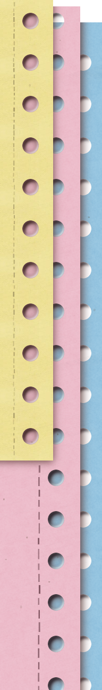

Farrel
Product Engineer
Description of work
I build software that simplifies how products and operations run.
Problem definition to shipped solution. Operational bottlenecks, internal processes, marketplace complexity.
Let's talkSelected work
PRO ELECTRIC
Constraint
Decision
Outcome
Manual scheduling and dispatching.
Built a custom operations tool.
4/day → 1-2/week
Constraint
Fragmented systems and manual reporting.
